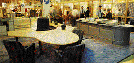

Office and Computerisation'96 will encompass everything a company might need in its daily business, which makes office furniture and not least the overall environment an important factor. A modem office with "soul" helps to create job satisfaction - and that aids efficiency, a key consideration in today's competitive world. Exhibitors at Office and Computerisation'96 will be showing Norwegian businesses how to create good, ergonomic and satisfying workplaces with products such as:
Lighting * Conference furniture and equipment * Canteen furniture * Computer furniture, terminal tables * Ergonomic furniture * Plants * Office furniture and furnishings * Alarms, fire hose cabinets and safes * Air fresheners, air conditioning * Filing systems, filing cabinets and so forth